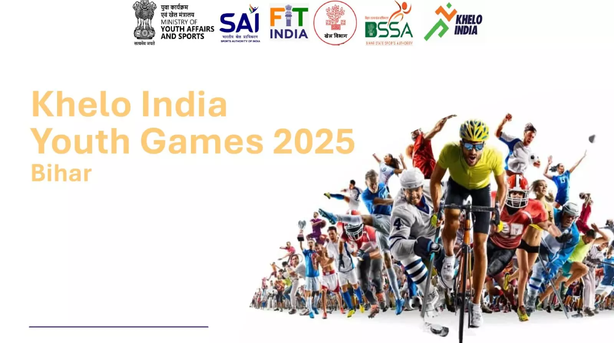
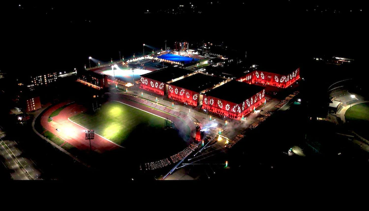

A New Era for Sports
"Khelo Bihar" represents the dynamic growth of sports culture in Bihar, marked by strong government support and increasing support for athletes across the state.
This initiative aims to build world-class sports infrastructure, nurture talent from the grassroots level, and inspire youth through competitive sports activities.
Khelo India Youth Games 2025Bihar proudly hosted the Khelo India Youth Games in 2025, featuring competitions in multiple cities. |
Record Medal HaulBihar's athletes achieved a record medal haul, elevating the state's position nationally and proving the success of the new empowerment initiatives. |

|
|  |
Impact on Youth DevelopmentThis initiative provides immense opportunities for youth, including scholarships, professional training, and viable careers in sports, fostering community engagement and state pride. |
Government InitiativeBoth the Government of India and the Government of Bihar are actively championing this movement, |
 |